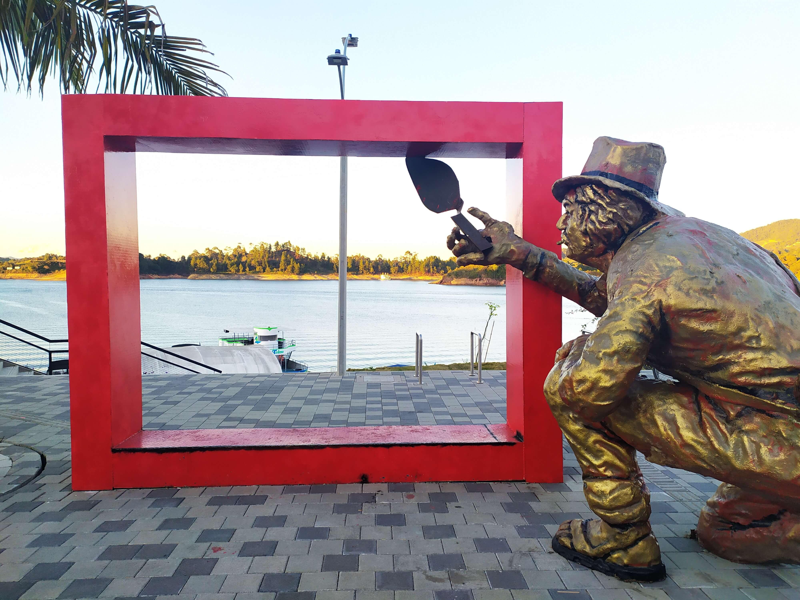
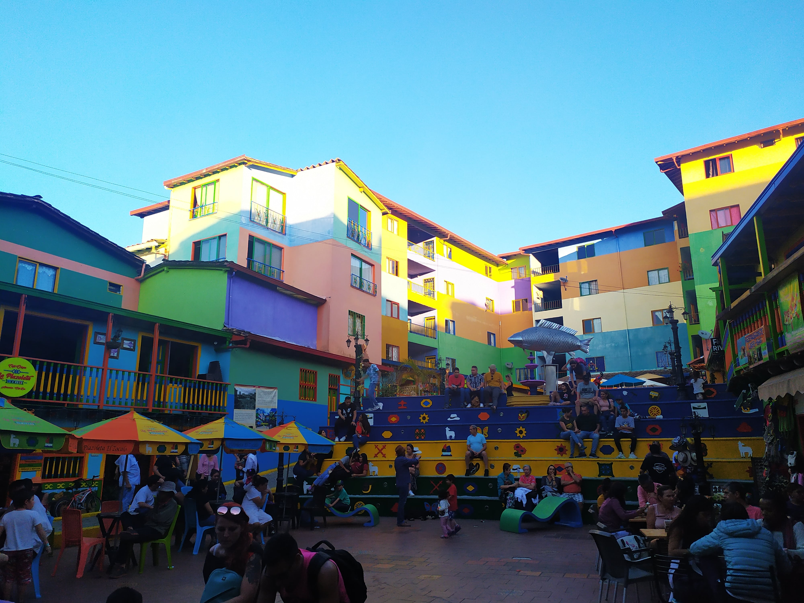
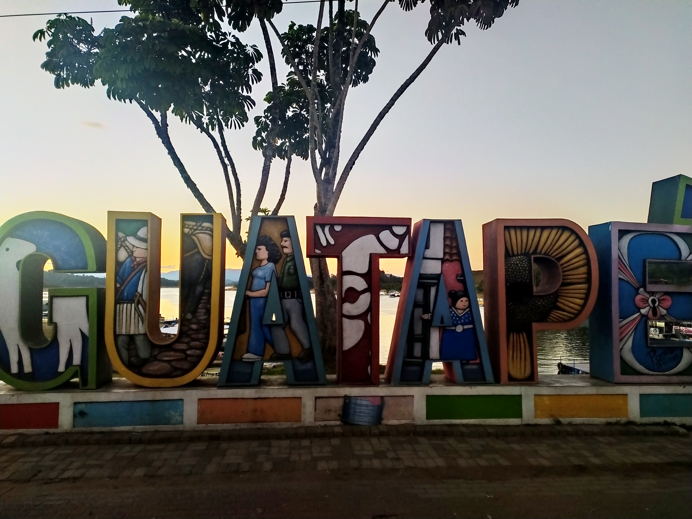
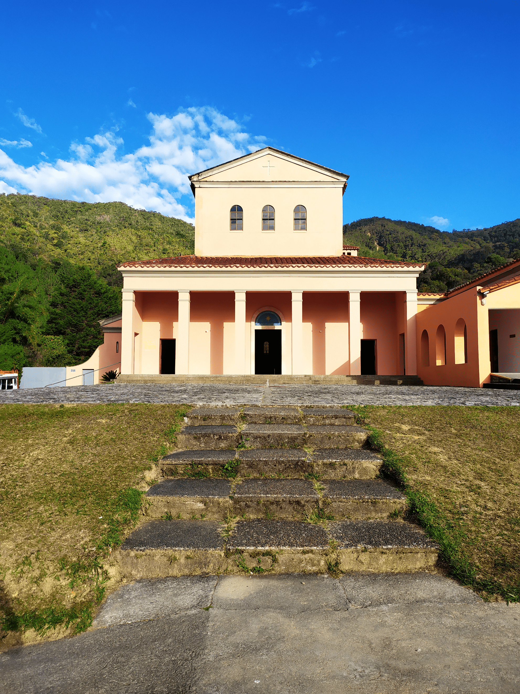
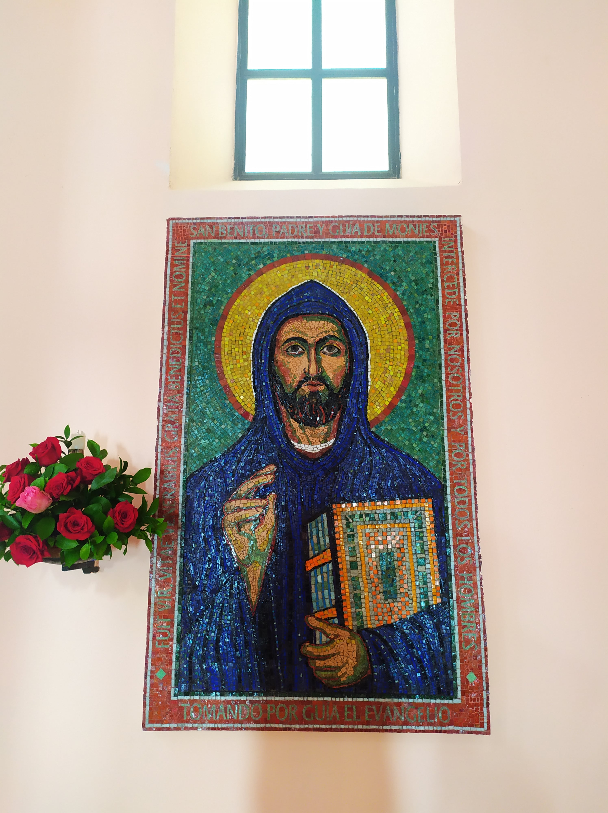

Es un municipio ubicado en Antioquia, Colombia. Abarca 76 kilómetros cuadrardos y ubicado a 1925 metros sobre el nivel del mar.
Es conocido como el pueblo de los zócalos (partes inferiores de las fachadas de las casas que son pintadas, generalmente de cemento), teniendo como alguien representativo a "Chepe" Parra, quien fue el que inició esta tendencia artística con el zócalo de un cordero,  el cual se convirtió en símbolo importante de este lugar, ya que era muy común ver rebaños de este animal y además sería una característica representativa de la cultura guatapense que conocemos hoy en día. A su vez, el municipio es reconocido por la represa que cubre la cuarta parte de su territorio; al momento de hacer esta represa, se tuvo que destruir la mayoría de la zona urbana que había en el municipio de El Peñol (del cual hablaremos en otra ocasión)
El diseño de los zócalos en las casas representan en algunas ocasiones el apellido o profesión de la familia que habite allí. Si por ejemplo la casa tiene una flor, la familia que habita aquí es florista.
En Guatapé podemos hacer diversas cosas, ya que es una zona altamente turística podemos encontrar muchas actividades para realizar:
Recorrer el pueblo y ver los diversos zócalos que hay por todo el lugar. Esto lo podemos hacer en un moto-taxi el cual es un sistema de transporte típico y colorido.
O lo podemos hacer a pie mientras comemos algo, Guatapé cuenta con muchos sitios de comidas típicas de Antioquia y Colombia, también de varios tipos de comida, incluyendo comida vegana.

Podemos visitar la plazoleta de los zócalos y tomarnos la típica foto en las escaleras, comprar algún recuerdo y tomar un café

O ir a caminar un rato por el malecón y ver las letras, o tomar un barco para hacer un recorrido por la represa.
También hay actividades para la gente que es creyente o a los que les interesa la cultura religiosa. En el parque principal está la Iglesia de Nuestra Señora del Carmén, también con sus zócalos muy interesantes.
 A unos minutos del parque, en moto-taxi, podemos llegar al Monasterio de los Monjes Benedictinos, un sitio no muy concurrido e interesante para visitar, es recomendable ir en un horario cuando estén haciendo cantos gregorianos. Los monjes que viven allí subsisten de vender cosas que hacen ellos desde medallas, hasta unos deliciosos chocolates.
Ellos alaban a San Benito, un monje el cual ha sido controversial ya que sus oraciones han sido tomadas para bien como para mal. Y para terminar, como dato curioso, al momento de ir al monasterio podemos observar que el viaje en moto-taxi es movidito ya que la carretera no está pavimentada, a los monjes se les ofreció pavimentar la ruta que llega a donde ellos, pero ellos no quisieron ya que como ellos ya están allá no lo necesitan y no están interesados en que ese sitio se vuelva exageradamente turístico como lo es el pueblo.
Próximamente, El Peñol...